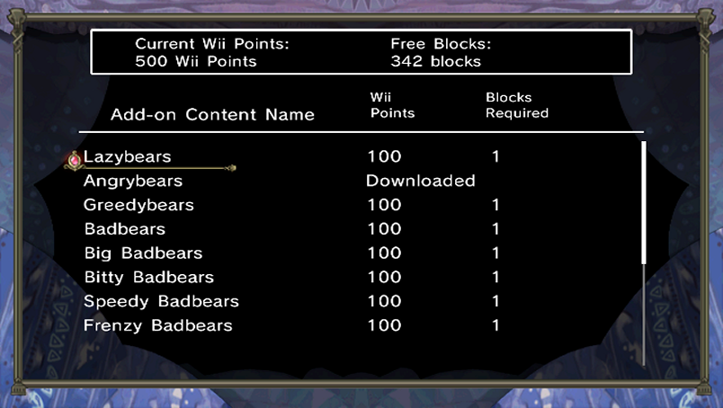

Add-on content can be purchased using Wii Points.
Please consult the Wii Shop Channel or Nintendo's homepage for details on how to purchase Wii Points.
Extra Chapter Packs
・Hidden Tome, Vol. 1
(300 Wii Points / Blocks required: 2)
Available: 7/5/10
Gives you access to 10 extra chapters.
・Hidden Tome, Vol. 2
(300 Wii Points / Blocks required: 2)
Available: 7/19/10
Gives you access to 10 extra chapters.
Extra Units
・Lazybears
(100 Wii Points / Blocks required: 2)
Available: 6/28/10
Lets you use Lazybears instead of the standard bear units. Lazybears are less active, but are easy to increase in number.
・Angrybears
(100 Wii Points / Blocks required: 2)
Available: 6/28/10
Lets you use Angrybears instead of the standard bear units. Angrybears are stronger and prefer fighting.
・Greedybears
(100 Wii Points / Blocks required: 2)
Available: 6/28/10
Lets you use Greedybears instead of the standard bear units. Greedybears prefer collecting items to fighting.
・Badbears
(100 Wii Points / Blocks required: 2)
Available: 7/5/10
Gives you 10 Badbears in addition to the standard bear units.
・Big Badbears
(100 Wii Points / Blocks required: 2)
Available: 7/5/10
Gives you 2 Big Badbears in addition to the standard bear units.
・Bitty Badbears
(100 Wii Points / Blocks required: 2)
Available: 7/12/10
Gives you 5 Bitty Badbears in addition to the standard bear units.
・Speedy Badbears
(100 Wii Points / Blocks required: 2)
Available: 7/12/10
Gives you 15 Speedy Badbears in addition to the standard bear units.
・Frenzy Badbears
(100 Wii Points / Blocks required: 2)
Available: 7/12/10
Gives you 5 Frenzy Badbears in addition to the standard bear units.
・Fire Sprites
(100 Wii Points / Blocks required: 2)
Available: 7/26/10
Gives you 4 Fire Sprites in addition to the standard bear units.
・Big Fire Sprites
(100 Wii Points / Blocks required: 2)
Available: 8/2/10
Gives you 2 Big Fire Sprites in addition to the standard bear units.
・Water Sprites
(100 Wii Points / Blocks required: 2)
Available: 7/26/10
Gives you 4 Water Sprites in addition to the standard bear units.
・Big Water Sprites
(100 Wii Points / Blocks required: 2)
Available: 8/2/10
Gives you 2 Big Water Sprites in addition to the standard bear units.
・Titanic Troll
(200 Wii Points / Blocks required: 2)
Available: 8/2/10
Gives you 1 Titanic Troll in addition to the standard bear units.
Warning:
The add-on content described above is for use with the game "The Tales of Bearsworth Manor: Chaotic Conflicts".
This add-on content cannot be played without the original game.
There must be enough available blocks to download this add-on content. To create free space, either move data to an SD Card or delete data in the Data Management screen.